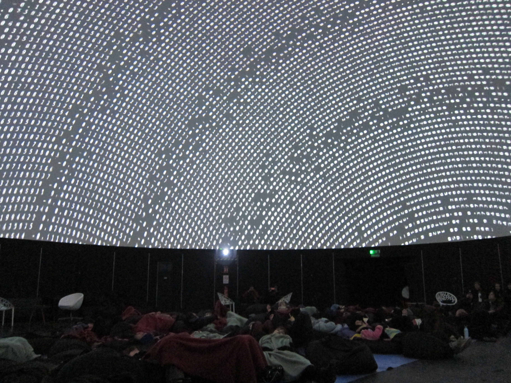
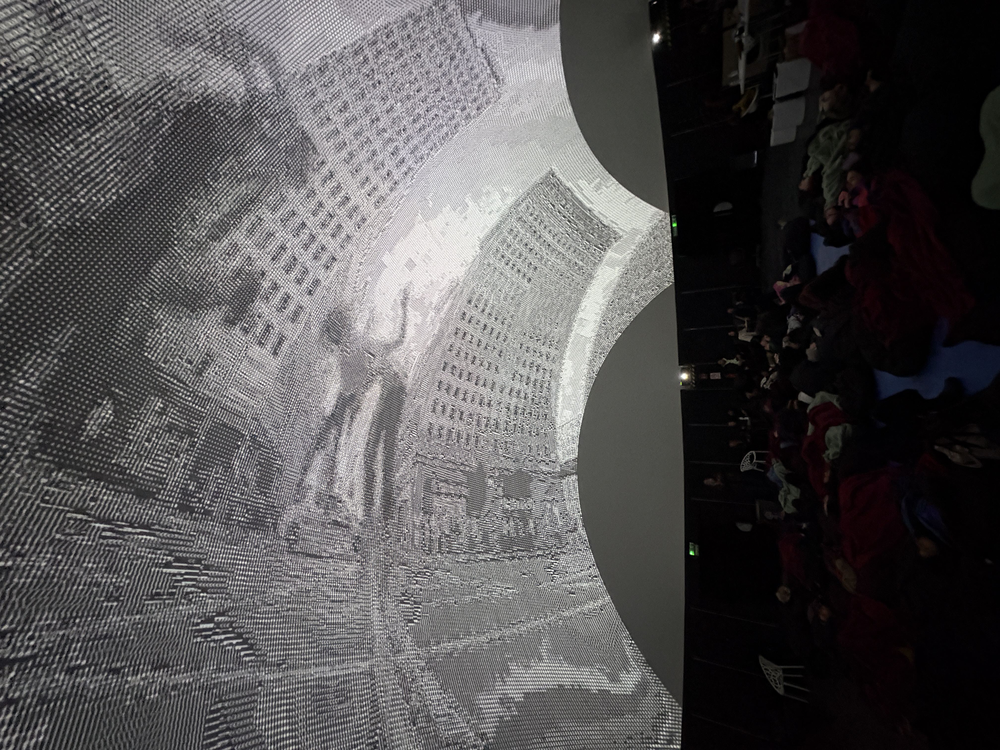

word soup
Word soup peers into a dreamer's mind making myth. Words drift and grow, fade and combine, collide and crystallise, wandering the expanding curved space in search of meaning as it emerges, dissolves, reforms, and disappears.
The piece is driven by a custom NLP data pipeline. Source texts — Italo Calvino's Invisible Cities and Alan Watts — are processed using spaCy to extract and lemmatise ~800 nouns, which are then encoded into 384-dimensional semantic vectors using sentence-transformers (all-MiniLM-L6-v2). Each word is scored across four semantic axes: mass, abstractness, and volatility via vector projection against pole-word clusters; and sociability via PMI-based co-occurrence. A cosine-similarity neighbour graph with an auto-tuned tau threshold determines which words are semantically close enough to bond.
These properties govern behaviour in a multi-agent simulation: words drift through a Perlin flow field, attract semantically similar neighbours, crystallise into clusters, and eventually fuse — two words merging into one at the midpoint of their embedding vectors. The simulation projects onto the curved interior surface of the dome.

